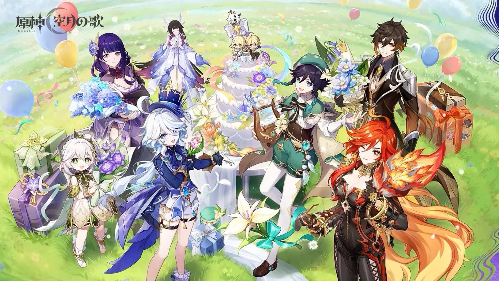
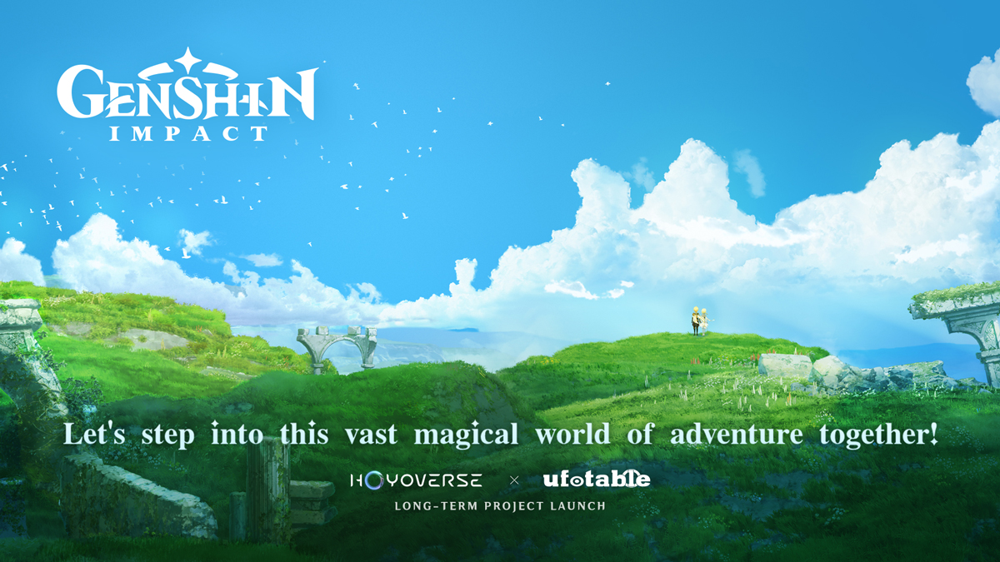

Bienvenida Viajero
Embárcate en un viaje a través de Teyvat, un mundo gobernado por los siete elementos y marcado por el destino de sus naciones. Conoce héroes extraordinarios, explora paisajes increíbles y desvela el misterio que separó a los Viajeros. Tras ser arrancado de tu hermano(a) por una fuerza desconocida, despiertas como un extraño sin recuerdos en una tierra donde los milagros y las tragedias se entrelazan. Mientras recorres montañas sagradas, reinos en guerra y ciudades bendecidas por los Arcontes, descubrirás que incluso los dioses tiemblan ante una verdad oculta… una verdad capaz de transformar el equilibrio del mundo. Tu misión no es solo encontrar a tu hermano: es enfrentar aquello que incluso los cielos temen.

Anime
